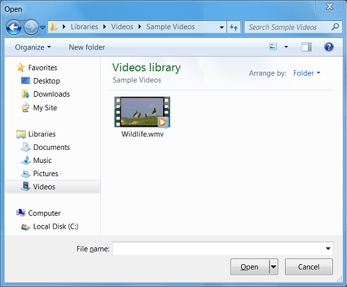

This sample application shows how to initialize the Component Object Model (COM) library and use a COM-based API in a Windows program.
The Open Dialog Box sample application displays the Open dialog box, as shown in the screen shot that follows. The sample demonstrates how to call a COM object in a Windows program. This sample is discussed in Module 2: Using COM in Your Windows Program.

This sample is available here.